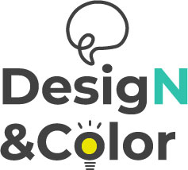
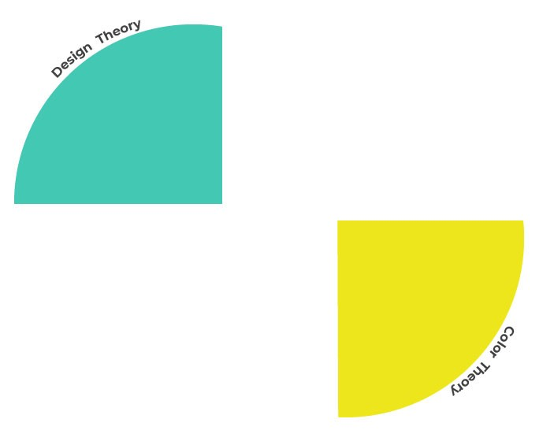
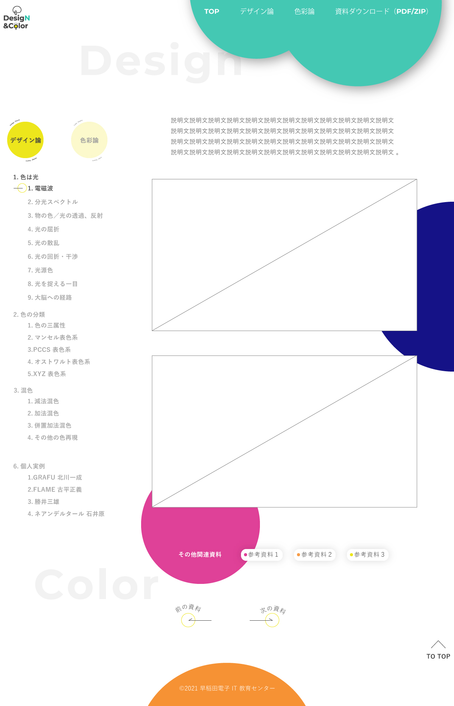
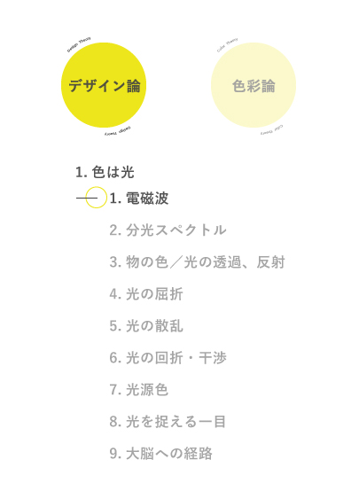

早稲田電子IT教育センター様
学内サイトの講師ページ

早稲田電子IT教育センター様「デザイン論・色彩論」の授業にて使用する、
講師ページのデザインを考えさせていただきました。
担当
ワイヤーフレームをもとに、トップページ・下層ページをデザイン（PC）
期間
4日
使用アプリ
Illustrator
サイトの目的
講師と生徒にとって、より使いやすいサイトにする
ターゲット
講師、生徒
コメント
「デザイン論・色彩論」の授業ということで、色を多く用いるよう意識しました。統一感を出したかったので、多様な色を使用しつつも、色のトーンを揃えるようにしました。
トップページ
ポイント

「考えること」「ひらめき」をイメージしてロゴを制作しました。先生のお名前の頭文字が「N」であることから、「N」を大文字にし、さらに色を変えることで強調しています。

生徒様に、より楽しい気持ちで授業を受けてもらえるよう「Color Theoru」「Design Theory」の文字は丸の周りを回る動きを想定し、少し遊び心を入れました。
下層ページ

ポイント

生徒様から「自分が今どのページを見ているか分からない」との声が上がっているということだったので、使用中の項目に濃い色を付けることで強調するようにしました。
また、講師様から「常に全項目が表示されている状態にしてほしい」というご要望があったので、使っていない項目は主張しすぎないよう薄い文字にすることで、全項目を表示しました。